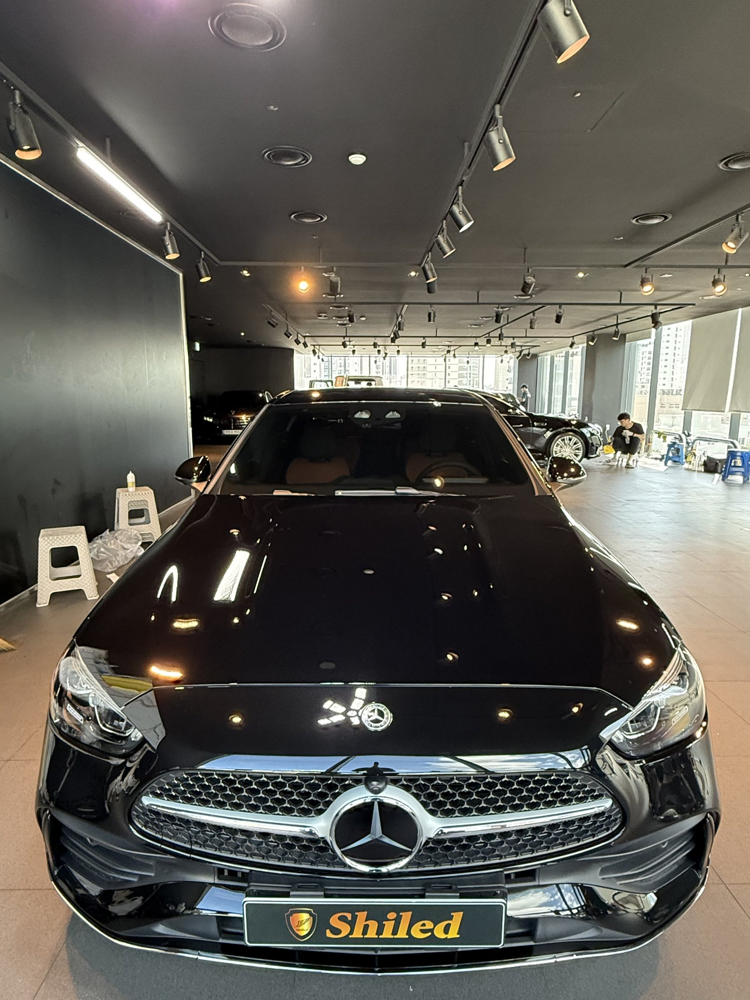
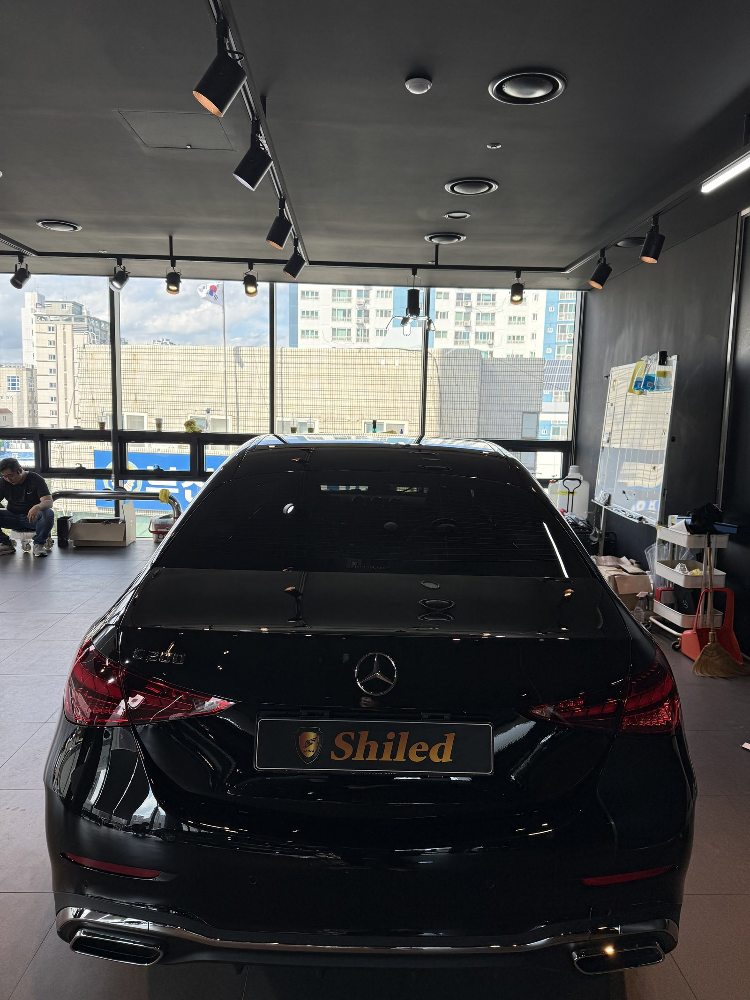
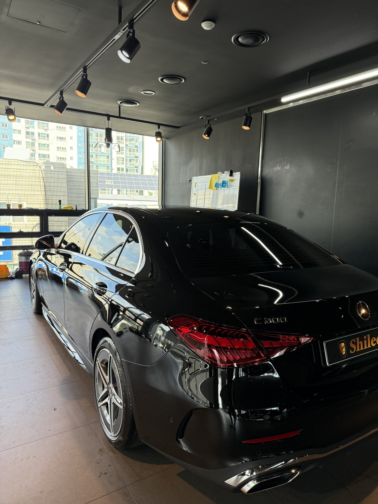
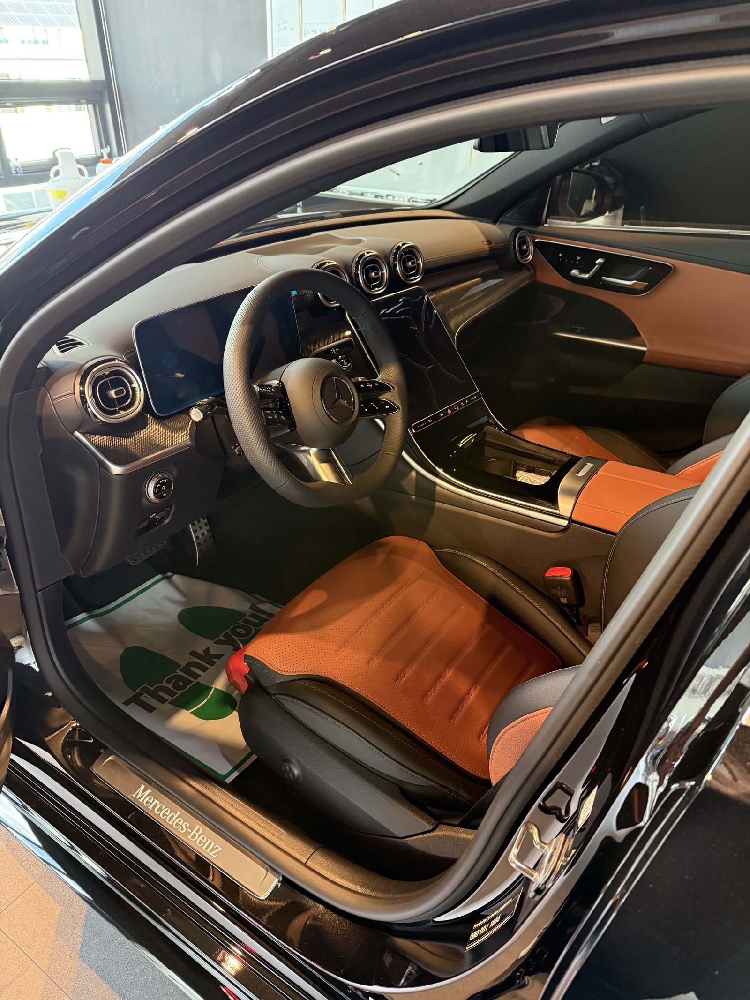
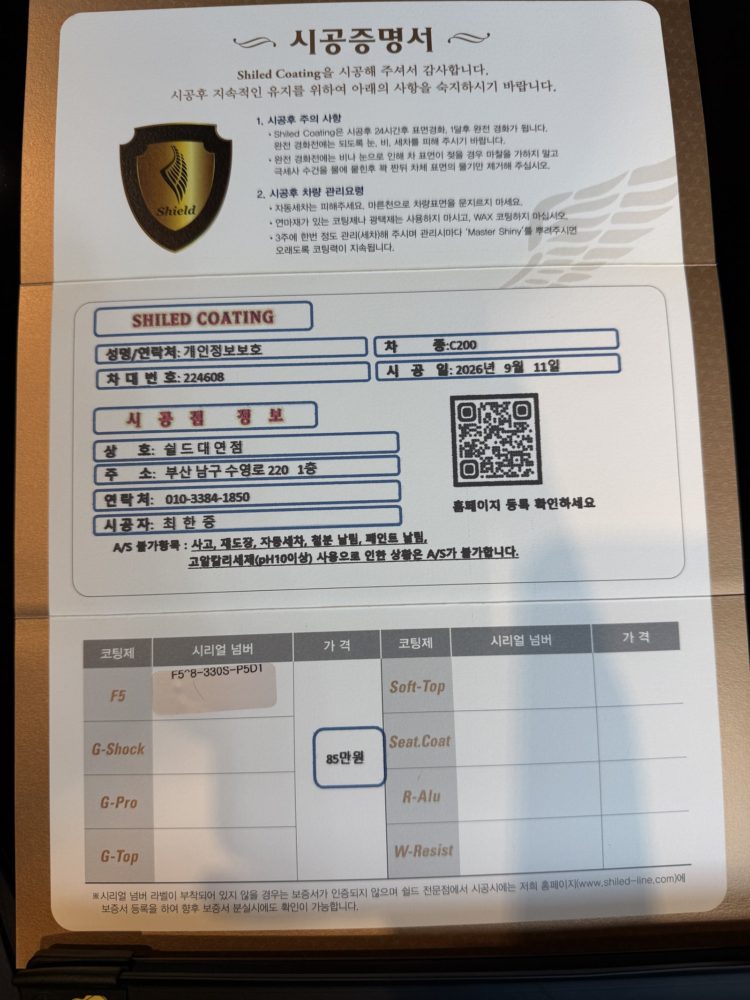

벤츠 C200 AMG라인, 검정입니다.
부산 유리막코팅으로 출고 전 F5 유리막코팅을 진행했습니다.

이번엔 매장이 아니라 벤츠 전시장으로 직접 나갔습니다. 통유리 너머로 도심이 내려다보이는 인도 현장, 출고를 기다리는 다른 차량들 사이에서 바로 코팅을 올렸습니다.
왜 매장이 아니라 전시장인가요?
출고 스케줄이 촉박한 신차는 매장까지 옮길 시간이 없기 때문입니다.
인도 직전 전시장에 대기 중인 차량은 고객 손에 넘어가기 전 그 자리에서 코팅을 마쳐야 합니다. 도구와 코팅제를 챙겨 전시장으로 직접 나가는 이유입니다.

검정 AMG라인, 그릴부터 다릅니다
AMG라인은 일반 트림과 그릴 패턴부터 다릅니다.
다이아몬드 패턴 메쉬 그릴에 크롬 스타가 큼직하게 박혀 정면 인상이 스포티합니다. 검정 도장은 이 크롬 라인을 가장 또렷하게 반사시키는 색이라, F5로 표면을 다지면 그 대비가 한층 살아납니다. 코팅제는 대표가 화학공학 전공으로 직접 개발·제조한 제품입니다.

기술자의 팁
검정 차는 표면이 거울처럼 반사되는 만큼 미세한 스월도 그대로 드러납니다. 신차라도 전처리 없이 코팅부터 올리면 오히려 흠집을 코팅 안에 가두는 셈이라, 탈지부터 순서대로 밟습니다.
코냑 브라운 시트가 살아있는 실내
운전석엔 아직 'Mercedes-Benz' 도어스커프 보호비닐과 인도 감사 바닥지가 그대로입니다.
AMG 스티어링휠과 코냑 브라운 가죽시트의 대비가 이 차의 포인트입니다. 외장은 F5로 검정 발색을 살리고, 실내는 인도 시점 그대로 깨끗하게 유지합니다.

시공증명서를 함께 드립니다
모든 시공 차량에 시공증명서를 드립니다.
차종·시공일·코팅제 시리얼 번호가 적혀 있고, 홈페이지에 등록해 보증을 받으실 수 있습니다. 이 차는 F5 코팅으로 기록돼 있습니다.

차종·시공일·코팅제 시리얼이 기재된 시공증명서
자주 묻는 질문
Q. 매장이 아니라 전시장에서도 코팅이 가능한가요?
A. 가능합니다. 출고 스케줄이 촉박한 신차는 매장까지 이동할 시간이 없어, 도구와 코팅제를 챙겨 전시장으로 직접 나가 그 자리에서 시공합니다.
Q. 검정 차에 F5 코팅이 잘 어울리나요?
A. 잘 어울립니다. F5는 색감 깊이를 끌어올려 글로시함을 극대화합니다. 검정은 표면이 거울처럼 반사되는 색이라, F5를 올리면 AMG 그릴의 크롬 라인까지 또렷하게 반사되어 대비가 살아납니다.
Q. 신차코팅도 전처리를 하나요?
A. 합니다. 검정 차는 표면이 거울처럼 반사되는 만큼 미세한 스월도 그대로 드러납니다. 전처리 없이 코팅부터 올리면 흠집을 코팅 안에 가두는 셈이라, 탈지부터 순서대로 밟습니다.
Q. 쉴드광택 위치와 예약은 어떻게 하나요?
A. 부산 남구 유엔로220 1F 쉴드광택입니다. 예약·상담은 010-3384-1850, 대표 최한중이 직접 상담하고 책임 시공합니다.
새 차일수록 시작점이 다릅니다. 가장 깨끗할 때 입혀두십시오.
제품을 직접 만드는 사람이 직접 시공합니다.
부산에서 신차코팅을 고민 중이시면 편하게 연락 주십시오.
어떤 차를 타냐보다 어떻게 타냐가 중요합니다~!
시공 중에는 전화를 받지 못할 때가 많습니다.
카카오톡으로 차종과 원하시는 시공을 남겨주시면 확인 후 답변드립니다.
쉴드광택 · 부산 남구 유엔로220 1F · 대표 최한중